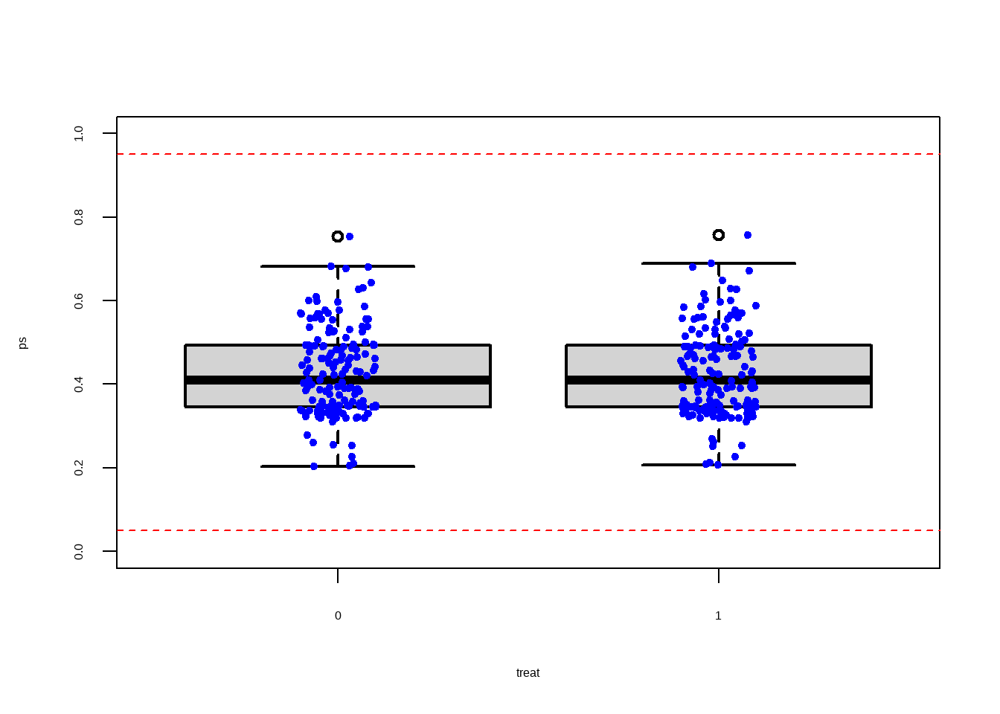

2 匹配（Matching）
倾向评分匹配根据他们的倾向评分将治疗组中的每个人与对照组中的个体相匹配。对于每个人来说，倾向得分可以直观地视为从一系列协变量（和潜在混杂因素confounding）计算出来的最近治疗的概率。两个人，一个来自治疗组，一个来自对照组，如果他们的倾向评分之间的差异很小，则被认为是匹配的。不匹配的参与者将被丢弃。
2.1 Matchit::matchit()
快速且易用
2.2 Matching::Match()
完全控制匹配过程
Show the code
Matching::Match(Y = ,
Tr = ,
X = ,
estimand = ,
caliper = ,
replace =
)2.3 匹配算法
最近邻匹配
全局匹配
最优匹配
CEM
卡尔玛诺夫斯基（caliper，卡尺）匹配
匹配比例 ratio
2.4 案例1
Show the code
data(lalonde, package='Matching')
lalonde %>%
str()
#> 'data.frame': 445 obs. of 12 variables:
#> $ age : int 37 22 30 27 33 22 23 32 22 33 ...
#> $ educ : int 11 9 12 11 8 9 12 11 16 12 ...
#> $ black : int 1 0 1 1 1 1 1 1 1 0 ...
#> $ hisp : int 0 1 0 0 0 0 0 0 0 0 ...
#> $ married: int 1 0 0 0 0 0 0 0 0 1 ...
#> $ nodegr : int 1 1 0 1 1 1 0 1 0 0 ...
#> $ re74 : num 0 0 0 0 0 0 0 0 0 0 ...
#> $ re75 : num 0 0 0 0 0 0 0 0 0 0 ...
#> $ re78 : num 9930 3596 24910 7506 290 ...
#> $ u74 : int 1 1 1 1 1 1 1 1 1 1 ...
#> $ u75 : int 1 1 1 1 1 1 1 1 1 1 ...
#> $ treat : int 1 1 1 1 1 1 1 1 1 1 ...| 变量名 | 描述 |
|---|---|
age |
年龄 |
educ |
受教育年限 |
black |
分类变量，1为黑人 |
hisp |
分类变量，1为西班牙裔 |
married |
分类变量，1为已婚 |
nodegr |
分类变量，1为有高中学历证书 |
re74 |
1974年的收入 |
re75 |
1975年的收入 |
re78 |
1978年的收入 |
u74 |
分类变量，1为1974年收入为零 |
u75 |
分类变量，1为1975年收入为零 |
treat |
分类变量，1为实验组 |
2.4.1 估计倾向得分：暴露建模
2.4.2 匹配
Show the code
# 1：1最近邻匹配
set.seed(123)
require(MatchIt)
match.obj <- matchit(ps_formula,data = lalonde,
distance = 'logit',
method = "nearest",
replace=FALSE,
ratio = 1)
lalonde$ps2 <- match.obj$distance
summary(match.obj$distance)
#> Min. 1st Qu. Median Mean 3rd Qu. Max.
#> 0.1128 0.3331 0.3904 0.4157 0.4904 0.8175
match.obj
#> A matchit object
#> - method: 1:1 nearest neighbor matching without replacement
#> - distance: Propensity score
#> - estimated with logistic regression
#> - number of obs.: 445 (original), 370 (matched)
#> - target estimand: ATT
#> - covariates: age, I(age^2), educ, I(educ^2), black, hisp, married, nodegr, re74, I(re74^2), re75, I(re75^2), u74, u75
# add caliper
logit_of_PS <- -log(1/lalonde$ps - 1)
# 或者 logit_of_PS <- log(lalonde$ps/(1-lalonde$ps))
.2*sd(logit_of_PS)
#> [1] 0.09857709
set.seed(123)
require(MatchIt)
match.obj <- matchit(ps_formula,data = lalonde,
distance = 'logit',
method = "nearest",
replace=FALSE,
ratio = 1,
caliper = .2*sd(logit_of_PS) )
match.obj
#> A matchit object
#> - method: 1:1 nearest neighbor matching without replacement
#> - distance: Propensity score [caliper]
#> - estimated with logistic regression
#> - caliper: <distance> (0.011)
#> - number of obs.: 445 (original), 330 (matched)
#> - target estimand: ATT
#> - covariates: age, I(age^2), educ, I(educ^2), black, hisp, married, nodegr, re74, I(re74^2), re75, I(re75^2), u74, u752.4.2.1 匹配结果
Show the code
match.obj$match.matrix %>% as.data.frame() %>%
rownames_to_column(var = "treat_unit") %>%
rename(matched_unit = V1) %>% drop_na()
#> treat_unit matched_unit
#> 1 1 403
#> 2 2 319
#> 3 3 261
#> 4 4 254
#> 5 5 255
#> 6 6 188
#> 7 7 218
#> 8 8 279
#> 9 10 277
#> 10 11 257
#> 11 12 285
#> 12 13 317
#> 13 14 211
#> 14 15 271
#> 15 16 323
#> 16 18 186
#> 17 19 229
#> 18 20 311
#> 19 21 235
#> 20 22 371
#> 21 23 329
#> 22 24 234
#> 23 25 327
#> 24 26 386
#> 25 27 204
#> 26 28 231
#> 27 29 328
#> 28 30 339
#> 29 31 333
#> 30 33 239
#> 31 34 431
#> 32 35 253
#> 33 36 196
#> 34 37 378
#> 35 38 303
#> 36 39 267
#> 37 40 202
#> 38 42 341
#> 39 43 318
#> 40 44 260
#> 41 45 443
#> 42 46 400
#> 43 47 357
#> 44 48 344
#> 45 49 365
#> 46 50 259
#> 47 51 208
#> 48 52 293
#> 49 53 321
#> 50 54 284
#> 51 55 369
#> 52 56 334
#> 53 57 322
#> 54 59 405
#> 55 60 377
#> 56 61 305
#> 57 62 230
#> 58 63 217
#> 59 64 221
#> 60 65 300
#> 61 66 197
#> 62 67 359
#> 63 68 397
#> 64 69 393
#> 65 70 280
#> 66 71 351
#> 67 72 215
#> 68 74 256
#> 69 76 373
#> 70 77 213
#> 71 78 297
#> 72 79 252
#> 73 80 240
#> 74 81 396
#> 75 82 434
#> 76 85 209
#> 77 86 243
#> 78 87 203
#> 79 88 226
#> 80 90 413
#> 81 91 193
#> 82 92 345
#> 83 93 219
#> 84 95 282
#> 85 96 241
#> 86 97 189
#> 87 98 310
#> 88 99 220
#> 89 100 223
#> 90 101 249
#> 91 102 247
#> 92 103 283
#> 93 104 330
#> 94 105 335
#> 95 106 288
#> 96 108 346
#> 97 109 291
#> 98 110 295
#> 99 111 306
#> 100 112 390
#> 101 113 250
#> 102 114 389
#> 103 115 426
#> 104 116 422
#> 105 118 366
#> 106 119 381
#> 107 120 304
#> 108 122 379
#> 109 123 368
#> 110 125 299
#> 111 126 425
#> 112 127 409
#> 113 128 198
#> 114 129 289
#> 115 130 388
#> 116 131 192
#> 117 132 392
#> 118 133 440
#> 119 134 354
#> 120 135 433
#> 121 136 383
#> 122 137 410
#> 123 138 367
#> 124 139 276
#> 125 140 395
#> 126 141 302
#> 127 142 427
#> 128 143 407
#> 129 144 415
#> 130 146 401
#> 131 147 420
#> 132 148 406
#> 133 149 421
#> 134 150 298
#> 135 151 385
#> 136 152 435
#> 137 153 376
#> 138 154 402
#> 139 155 266
#> 140 156 438
#> 141 157 408
#> 142 158 436
#> 143 159 437
#> 144 160 216
#> 145 161 416
#> 146 162 263
#> 147 163 380
#> 148 164 414
#> 149 165 394
#> 150 166 428
#> 151 167 227
#> 152 168 370
#> 153 169 419
#> 154 172 384
#> 155 173 212
#> 156 174 430
#> 157 175 361
#> 158 176 194
#> 159 177 187
#> 160 178 418
#> 161 180 262
#> 162 181 313
#> 163 183 201
#> 164 184 423
#> 165 185 417
matched.data <- match.data(match.obj)
table(matched.data$subclass)
#>
#> 1 2 3 4 5 6 7 8 9 10 11 12 13 14 15 16 17 18 19 20
#> 2 2 2 2 2 2 2 2 2 2 2 2 2 2 2 2 2 2 2 2
#> 21 22 23 24 25 26 27 28 29 30 31 32 33 34 35 36 37 38 39 40
#> 2 2 2 2 2 2 2 2 2 2 2 2 2 2 2 2 2 2 2 2
#> 41 42 43 44 45 46 47 48 49 50 51 52 53 54 55 56 57 58 59 60
#> 2 2 2 2 2 2 2 2 2 2 2 2 2 2 2 2 2 2 2 2
#> 61 62 63 64 65 66 67 68 69 70 71 72 73 74 75 76 77 78 79 80
#> 2 2 2 2 2 2 2 2 2 2 2 2 2 2 2 2 2 2 2 2
#> 81 82 83 84 85 86 87 88 89 90 91 92 93 94 95 96 97 98 99 100
#> 2 2 2 2 2 2 2 2 2 2 2 2 2 2 2 2 2 2 2 2
#> 101 102 103 104 105 106 107 108 109 110 111 112 113 114 115 116 117 118 119 120
#> 2 2 2 2 2 2 2 2 2 2 2 2 2 2 2 2 2 2 2 2
#> 121 122 123 124 125 126 127 128 129 130 131 132 133 134 135 136 137 138 139 140
#> 2 2 2 2 2 2 2 2 2 2 2 2 2 2 2 2 2 2 2 2
#> 141 142 143 144 145 146 147 148 149 150 151 152 153 154 155 156 157 158 159 160
#> 2 2 2 2 2 2 2 2 2 2 2 2 2 2 2 2 2 2 2 2
#> 161 162 163 164 165
#> 2 2 2 2 22.4.3 平衡诊断
Show the code
# 散点图展示了匹配后实验组和对照组样本倾向值的分布，凸显了分布平衡与不平衡，分布缺乏重合
plot(match.obj,type = "jitter")
#> To identify the units, use first mouse button; to stop, use second.
Show the code
# 标准化平衡统计值，Std. Mean Diff.
summary(match.obj,standardize = TRUE)
#>
#> Call:
#> matchit(formula = ps_formula, data = lalonde, method = "nearest",
#> distance = "logit", replace = FALSE, caliper = 0.2 * sd(logit_of_PS),
#> ratio = 1)
#>
#> Summary of Balance for All Data:
#> Means Treated Means Control Std. Mean Diff. Var. Ratio eCDF Mean
#> distance 0.4468 0.3936 0.4533 1.2101 0.1340
#> age 25.8162 25.0538 0.1066 1.0278 0.0254
#> I(age^2) 717.3946 677.3154 0.0929 1.0115 0.0254
#> educ 10.3459 10.0885 0.1281 1.5513 0.0287
#> I(educ^2) 111.0595 104.3731 0.1701 1.6625 0.0287
#> black 0.8432 0.8269 0.0449 . 0.0163
#> hisp 0.0595 0.1077 -0.2040 . 0.0482
#> married 0.1892 0.1538 0.0902 . 0.0353
#> nodegr 0.7081 0.8346 -0.2783 . 0.1265
#> re74 2095.5740 2107.0268 -0.0023 0.7381 0.0192
#> I(re74^2) 28141433.9907 36667413.1577 -0.0747 0.5038 0.0192
#> re75 1532.0556 1266.9092 0.0824 1.0763 0.0508
#> I(re75^2) 12654752.6909 11196530.0057 0.0260 1.4609 0.0508
#> u74 0.7081 0.7500 -0.0921 . 0.0419
#> u75 0.6000 0.6846 -0.1727 . 0.0846
#> eCDF Max
#> distance 0.2244
#> age 0.0652
#> I(age^2) 0.0652
#> educ 0.1265
#> I(educ^2) 0.1265
#> black 0.0163
#> hisp 0.0482
#> married 0.0353
#> nodegr 0.1265
#> re74 0.0471
#> I(re74^2) 0.0471
#> re75 0.1075
#> I(re75^2) 0.1075
#> u74 0.0419
#> u75 0.0846
#>
#> Summary of Balance for Matched Data:
#> Means Treated Means Control Std. Mean Diff. Var. Ratio eCDF Mean
#> distance 0.4290 0.4273 0.0143 1.0167 0.0066
#> age 25.6848 25.0182 0.0932 1.1134 0.0242
#> I(age^2) 709.6242 670.7394 0.0902 1.0541 0.0242
#> educ 10.2182 10.3030 -0.0422 1.0025 0.0104
#> I(educ^2) 107.5152 109.2485 -0.0441 1.0297 0.0104
#> black 0.8545 0.8606 -0.0167 . 0.0061
#> hisp 0.0667 0.0727 -0.0256 . 0.0061
#> married 0.1939 0.1758 0.0464 . 0.0182
#> nodegr 0.7636 0.7576 0.0133 . 0.0061
#> re74 1979.6859 1697.2983 0.0578 1.3407 0.0143
#> I(re74^2) 23013407.0991 17122843.1081 0.0516 1.6221 0.0143
#> re75 1499.3482 1305.7439 0.0601 1.4323 0.0285
#> I(re75^2) 12495634.7776 8859530.6884 0.0649 4.1201 0.0285
#> u74 0.7091 0.7152 -0.0133 . 0.0061
#> u75 0.6000 0.6242 -0.0495 . 0.0242
#> eCDF Max Std. Pair Dist.
#> distance 0.0424 0.0207
#> age 0.0545 0.7539
#> I(age^2) 0.0545 0.7161
#> educ 0.0485 0.5486
#> I(educ^2) 0.0485 0.5332
#> black 0.0061 0.3834
#> hisp 0.0061 0.2307
#> married 0.0182 0.5416
#> nodegr 0.0061 0.2799
#> re74 0.0485 0.5952
#> I(re74^2) 0.0485 0.3175
#> re75 0.0667 0.5325
#> I(re75^2) 0.0667 0.3181
#> u74 0.0061 0.7065
#> u75 0.0242 0.4701
#>
#> Sample Sizes:
#> Control Treated
#> All 260 185
#> Matched 165 165
#> Unmatched 95 20
#> Discarded 0 02.4.3.1 tableone
Show the code
# full data
baselineVars <- c("age", "educ", "black", "hisp", "married",
"re74", "re75", "u74", "u75")
library(tableone)
tab1e_full <- CreateTableOne(vars = baselineVars,
data = lalonde[1:12],
strata = "treat",
includeNA = TRUE,
test = TRUE, smd = TRUE)
print(tab1e_full, showAllLevels = FALSE, smd = TRUE, test = TRUE)
#> Stratified by treat
#> 0 1 p test SMD
#> n 260 185
#> age (mean (SD)) 25.05 (7.06) 25.82 (7.16) 0.265 0.107
#> educ (mean (SD)) 10.09 (1.61) 10.35 (2.01) 0.135 0.141
#> black (mean (SD)) 0.83 (0.38) 0.84 (0.36) 0.649 0.044
#> hisp (mean (SD)) 0.11 (0.31) 0.06 (0.24) 0.076 0.175
#> married (mean (SD)) 0.15 (0.36) 0.19 (0.39) 0.327 0.094
#> re74 (mean (SD)) 2107.03 (5687.91) 2095.57 (4886.62) 0.982 0.002
#> re75 (mean (SD)) 1266.91 (3102.98) 1532.06 (3219.25) 0.382 0.084
#> u74 (mean (SD)) 0.75 (0.43) 0.71 (0.46) 0.326 0.094
#> u75 (mean (SD)) 0.68 (0.47) 0.60 (0.49) 0.065 0.177
# matched data
matched.data <- match.data(match.obj)
tab1e_matched <- CreateTableOne(vars = baselineVars,
data = matched.data[1:12],
strata = "treat",
includeNA = TRUE,
test = TRUE, smd = TRUE)
print(tab1e_matched, showAllLevels = FALSE, smd = TRUE, test = TRUE)
#> Stratified by treat
#> 0 1 p test SMD
#> n 165 165
#> age (mean (SD)) 25.02 (6.72) 25.68 (7.09) 0.381 0.097
#> educ (mean (SD)) 10.30 (1.76) 10.22 (1.77) 0.663 0.048
#> black (mean (SD)) 0.86 (0.35) 0.85 (0.35) 0.875 0.017
#> hisp (mean (SD)) 0.07 (0.26) 0.07 (0.25) 0.829 0.024
#> married (mean (SD)) 0.18 (0.38) 0.19 (0.40) 0.672 0.047
#> re74 (mean (SD)) 1697.30 (3785.35) 1979.69 (4383.00) 0.532 0.069
#> re75 (mean (SD)) 1305.74 (2682.94) 1499.35 (3210.93) 0.553 0.065
#> u74 (mean (SD)) 0.72 (0.45) 0.71 (0.46) 0.904 0.013
#> u75 (mean (SD)) 0.62 (0.49) 0.60 (0.49) 0.653 0.050可以获得p值来检查平衡：但不建议这样做，基于P值的平衡评估可能会受到样本量的影响
Show the code
smd.res <- ExtractSmd(tab1e_matched)
t(round(smd.res,2))
#> age educ black hisp married re74 re75 u74 u75
#> 1 vs 2 0.1 0.05 0.02 0.02 0.05 0.07 0.07 0.01 0.05Show the code
Show the code
bal.tab(match.obj, un=TRUE,
thresholds = c(m = .1, v=2))
#> Balance Measures
#> Type Diff.Un V.Ratio.Un Diff.Adj M.Threshold V.Ratio.Adj
#> distance Distance 0.4533 1.2101 0.0143 Balanced, <0.1 1.0167
#> age Contin. 0.1066 1.0278 0.0932 Balanced, <0.1 1.1134
#> I(age^2) Contin. 0.0929 1.0115 0.0902 Balanced, <0.1 1.0541
#> educ Contin. 0.1281 1.5513 -0.0422 Balanced, <0.1 1.0025
#> I(educ^2) Contin. 0.1701 1.6625 -0.0441 Balanced, <0.1 1.0297
#> black Binary 0.0163 . -0.0061 Balanced, <0.1 .
#> hisp Binary -0.0482 . -0.0061 Balanced, <0.1 .
#> married Binary 0.0353 . 0.0182 Balanced, <0.1 .
#> nodegr Binary -0.1265 . 0.0061 Balanced, <0.1 .
#> re74 Contin. -0.0023 0.7381 0.0578 Balanced, <0.1 1.3407
#> I(re74^2) Contin. -0.0747 0.5038 0.0516 Balanced, <0.1 1.6221
#> re75 Contin. 0.0824 1.0763 0.0601 Balanced, <0.1 1.4323
#> I(re75^2) Contin. 0.0260 1.4609 0.0649 Balanced, <0.1 4.1201
#> u74 Binary -0.0419 . -0.0061 Balanced, <0.1 .
#> u75 Binary -0.0846 . -0.0242 Balanced, <0.1 .
#> V.Threshold
#> distance Balanced, <2
#> age Balanced, <2
#> I(age^2) Balanced, <2
#> educ Balanced, <2
#> I(educ^2) Balanced, <2
#> black
#> hisp
#> married
#> nodegr
#> re74 Balanced, <2
#> I(re74^2) Balanced, <2
#> re75 Balanced, <2
#> I(re75^2) Not Balanced, >2
#> u74
#> u75
#>
#> Balance tally for mean differences
#> count
#> Balanced, <0.1 15
#> Not Balanced, >0.1 0
#>
#> Variable with the greatest mean difference
#> Variable Diff.Adj M.Threshold
#> age 0.0932 Balanced, <0.1
#>
#> Balance tally for variance ratios
#> count
#> Balanced, <2 8
#> Not Balanced, >2 1
#>
#> Variable with the greatest variance ratio
#> Variable V.Ratio.Adj V.Threshold
#> I(re75^2) 4.1201 Not Balanced, >2
#>
#> Sample sizes
#> Control Treated
#> All 260 185
#> Matched 165 165
#> Unmatched 95 20
{kind=link}
2.4.3.2 重叠
Show the code
boxplot(ps ~ treat, data = lalonde,
lwd = 2, ylab = 'ps')
stripchart(ps ~ treat, vertical = TRUE,
data = lalonde, method = "jitter",
add = TRUE, pch = 20, col = 'blue')Show the code
plot(match.obj, type = "jitter")#> To identify the units, use first mouse button; to stop, use second.Show the code
# 直方图展示了匹配前后倾向值的分布
plot(match.obj, type = "hist")Show the code
require(cobalt)
baltab.res <- bal.tab(x = match.obj, data = lalonde,
treat = lalonde$treat,
disp.v.ratio = TRUE)
baltab.res
#> Balance Measures
#> Type Diff.Adj V.Ratio.Adj
#> distance Distance 0.0143 1.0167
#> age Contin. 0.0932 1.1134
#> I(age^2) Contin. 0.0902 1.0541
#> educ Contin. -0.0422 1.0025
#> I(educ^2) Contin. -0.0441 1.0297
#> black Binary -0.0061 .
#> hisp Binary -0.0061 .
#> married Binary 0.0182 .
#> nodegr Binary 0.0061 .
#> re74 Contin. 0.0578 1.3407
#> I(re74^2) Contin. 0.0516 1.6221
#> re75 Contin. 0.0601 1.4323
#> I(re75^2) Contin. 0.0649 4.1201
#> u74 Binary -0.0061 .
#> u75 Binary -0.0242 .
#>
#> Sample sizes
#> Control Treated
#> All 260 185
#> Matched 165 165
#> Unmatched 95 20Show the code
boxplot(ps ~ treat, data = matched.data,
lwd = 2, ylab = 'ps', ylim=c(0,1))
stripchart(ps ~ treat, vertical = TRUE,
data = matched.data, method = "jitter",
add = TRUE, pch = 20, col = 'blue')
abline(h=c(0+0.05,1-0.05), col = "red", lty = 2)
2.4.4 估计因果效应：结局建模
Show the code
dat <- lalonde |> mutate(
ate_weight = psa::calculate_ps_weights(treat, ps, estimand = 'ATE'),
att_weight = psa::calculate_ps_weights(treat, ps, estimand = 'ATT'),
atc_weight = psa::calculate_ps_weights(treat, ps, estimand = 'ATC'),
atm_weight = psa::calculate_ps_weights(treat, ps, estimand = 'ATM')
)
match_out <- Matching::Match(Y = dat$re78,
Tr = dat$treat,
X = dat$ps,
caliper = 0.1,
replace = FALSE,
estimand = 'ATE')
dat_match <- data.frame(treat_ps = dat[match_out$index.treated,]$ps,
treat_outcome = dat[match_out$index.treated,]$treat,
control_ps = dat[match_out$index.control,]$ps,
control_outcome = dat[match_out$index.control,]$treat)
psa::matching_plot(ps = dat$ps,
treatment = dat$treat,
outcome = dat$re78,
index_treated = match_out$index.treated,
index_control = match_out$index.control)Show the code
library(granovaGG)
granovagg.ds(dat_match[, c('control_ps', 'treat_ps')],
main = 'Treatment vs Control',
xlab = 'Treatment',
ylab = 'Control')
#> Summary Statistics
#> n 325.000
#> control_ps mean 0.427
#> treat_ps mean 0.427
#> mean(D = control_ps - treat_ps) 0.000
#> SD(D) 0.004
#> Effect Size 0.099
#> r(control_ps, treat_ps) 0.999
#> r(control_ps + treat_ps, D) 0.003
#> Lower 95% Confidence Interval 0.001
#> Upper 95% Confidence Interval 0.000
#> t (D-bar) 1.786
#> df.t 324.000
#> p-value (t-statistic) 0.075相关样本评估图 （R-granovaGG？），其中每个点代表一个匹配的对。治疗观测值绘制在 x 轴上，对照观测值绘制在 y 轴上。垂直于单位线的线上的点表示差值分数的分布。置信区间为紫色，显然没有跨越单位线，表明具有统计学意义的处理效果。
Show the code
matched.data <- match.data(match.obj)
outcome_fit <- glm(re78 ~ treat + age + I(age^2) + educ + I(educ^2) + black +
hisp + married + nodegr + re74 + I(re74^2) + re75 + I(re75^2) + u74 + u75,
data = matched.data,
family = gaussian,)
require(jtools)
# cluster option
summ(outcome_fit, rubust = "HC0", confint = TRUE, digists = 4,
cluster = "subclass", model.info = FALSE,
model.fit = FALSE, exp = TRUE)| exp(Est.) | 2.5% | 97.5% | t val. | p | |
|---|---|---|---|---|---|
| (Intercept) | Inf | 0.00 | Inf | 0.65 | 0.52 |
| treat | Inf | 908.95 | Inf | 1.97 | 0.05 |
| age | 57405944379315703788400660660862044264660840228406628428426662484660602402446440404446040480224662262888.00 | 0.00 | Inf | 0.77 | 0.44 |
| I(age^2) | 0.06 | 0.00 | 1097.55 | -0.57 | 0.57 |
| educ | 0.00 | 0.00 | Inf | -0.88 | 0.38 |
| I(educ^2) | 28541250540249301224064866446620628268480284206.00 | 0.00 | 143915694200275994966664688226486484428088222042240848428860000066822440406224048444664660888082424806228268244868428284246862.00 | 1.16 | 0.25 |
| black | 0.00 | 0.00 | 0.00 | -2.83 | 0.00 |
| hisp | 0.00 | 0.00 | Inf | -0.30 | 0.76 |
| married | 0.00 | 0.00 | Inf | -0.32 | 0.75 |
| nodegr | Inf | 0.00 | Inf | 1.09 | 0.28 |
| re74 | 1.08 | 0.54 | 2.19 | 0.22 | 0.82 |
| I(re74^2) | 1.00 | 1.00 | 1.00 | -0.01 | 0.99 |
| re75 | 1.06 | 0.51 | 2.21 | 0.17 | 0.87 |
| I(re75^2) | 1.00 | 1.00 | 1.00 | -0.08 | 0.94 |
| u74 | Inf | 0.00 | Inf | 1.41 | 0.16 |
| u75 | 0.00 | 0.00 | 34315362040838099536062828422682068004060466420404684064268402662048262604282882002408242628428868064820482200060602606868064046442466008080686086842484204602466640200080.00 | -1.66 | 0.10 |
| Standard errors: MLE |
Show the code
# GEE
# conditional logistic
# bootstrapping2.4.4.1 计算ATT
为了简化步骤，以当前的结果进行匹配后分析。
Show the code
library("clarify")
set.seed(123)
sim_coefs <- clarify::sim(outcome_fit)
sim_coefs
#> A `clarify_sim` object
#> - 16 coefficients, 1000 simulated values
#> - sampled distribution: multivariate t(314)
#> - original fitting function call:
#>
#> glm(formula = re78 ~ treat + age + I(age^2) + educ + I(educ^2) +
#> black + hisp + married + nodegr + re74 + I(re74^2) + re75 +
#> I(re75^2) + u74 + u75, family = gaussian, data = matched.data)
est <- sim_ame(sim_coefs, var = "treat", subset = treat == 1,
contrast = "rr" , verbose = F) # "diff" ,sr, ar
est
#> A `clarify_est` object (from `sim_ame()`)
#> - Average adjusted predictions for `treat`
#> - 1000 simulated values
#> - 3 quantities estimated:
#> E[Y(0)] 4537.971710
#> E[Y(1)] 5927.974158
#> RR 1.306305
summary(est)
#> Estimate 2.5 % 97.5 %
#> E[Y(0)] 4537.972 3540.907 5495.420
#> E[Y(1)] 5927.974 4986.618 6940.625
#> RR 1.306 0.992 1.768
# 绘制 ATT
plot(est)2.4.5 敏感性分析
Show the code
# 提取匹配后的样本
mData <- match.data(match.obj,group = "all")
mData_trt <- match.data(match.obj,group = "treat")
mData_ctrl <- match.data(match.obj,group = "control")
library(rbounds)
psens(x =mData_trt$re78,
y =mData_ctrl$re78 ,Gamma = 2,GammaInc = 0.1)
#>
#> Rosenbaum Sensitivity Test for Wilcoxon Signed Rank P-Value
#>
#> Unconfounded estimate .... 0.0492
#>
#> Gamma Lower bound Upper bound
#> 1.0 0.0492 0.0492
#> 1.1 0.0151 0.1264
#> 1.2 0.0042 0.2481
#> 1.3 0.0010 0.3991
#> 1.4 0.0002 0.5545
#> 1.5 0.0001 0.6925
#> 1.6 0.0000 0.8012
#> 1.7 0.0000 0.8787
#> 1.8 0.0000 0.9298
#> 1.9 0.0000 0.9611
#> 2.0 0.0000 0.9793
#>
#> Note: Gamma is Odds of Differential Assignment To
#> Treatment Due to Unobserved Factors
#>
hlsens(x =mData_trt$re78,
y =mData_ctrl$re78 ,Gamma = 2,GammaInc = 0.1)
#>
#> Rosenbaum Sensitivity Test for Hodges-Lehmann Point Estimate
#>
#> Unconfounded estimate .... 1070.54
#>
#> Gamma Lower bound Upper bound
#> 1.0 1070.50 1070.5
#> 1.1 562.54 1213.7
#> 1.2 319.74 1508.4
#> 1.3 75.84 1822.9
#> 1.4 -124.56 2037.8
#> 1.5 -338.56 2233.1
#> 1.6 -541.66 2490.0
#> 1.7 -767.96 2673.4
#> 1.8 -965.76 2896.6
#> 1.9 -1124.30 3090.6
#> 2.0 -1286.60 3289.2
#>
#> Note: Gamma is Odds of Differential Assignment To
#> Treatment Due to Unobserved Factors
#> 2.5 matchIt()与Match()
Show the code
matchit.out <- MatchIt::matchit(ps_formula,
data = lalonde,
estimand = "ATT" ) #ATC
summary(matchit.out)
#>
#> Call:
#> MatchIt::matchit(formula = ps_formula, data = lalonde, estimand = "ATT")
#>
#> Summary of Balance for All Data:
#> Means Treated Means Control Std. Mean Diff. Var. Ratio eCDF Mean
#> distance 0.4468 0.3936 0.4533 1.2101 0.1340
#> age 25.8162 25.0538 0.1066 1.0278 0.0254
#> I(age^2) 717.3946 677.3154 0.0929 1.0115 0.0254
#> educ 10.3459 10.0885 0.1281 1.5513 0.0287
#> I(educ^2) 111.0595 104.3731 0.1701 1.6625 0.0287
#> black 0.8432 0.8269 0.0449 . 0.0163
#> hisp 0.0595 0.1077 -0.2040 . 0.0482
#> married 0.1892 0.1538 0.0902 . 0.0353
#> nodegr 0.7081 0.8346 -0.2783 . 0.1265
#> re74 2095.5740 2107.0268 -0.0023 0.7381 0.0192
#> I(re74^2) 28141433.9907 36667413.1577 -0.0747 0.5038 0.0192
#> re75 1532.0556 1266.9092 0.0824 1.0763 0.0508
#> I(re75^2) 12654752.6909 11196530.0057 0.0260 1.4609 0.0508
#> u74 0.7081 0.7500 -0.0921 . 0.0419
#> u75 0.6000 0.6846 -0.1727 . 0.0846
#> eCDF Max
#> distance 0.2244
#> age 0.0652
#> I(age^2) 0.0652
#> educ 0.1265
#> I(educ^2) 0.1265
#> black 0.0163
#> hisp 0.0482
#> married 0.0353
#> nodegr 0.1265
#> re74 0.0471
#> I(re74^2) 0.0471
#> re75 0.1075
#> I(re75^2) 0.1075
#> u74 0.0419
#> u75 0.0846
#>
#> Summary of Balance for Matched Data:
#> Means Treated Means Control Std. Mean Diff. Var. Ratio eCDF Mean
#> distance 0.4468 0.4284 0.1571 1.3077 0.0387
#> age 25.8162 25.1351 0.0952 1.1734 0.0243
#> I(age^2) 717.3946 675.1676 0.0979 1.1512 0.0243
#> educ 10.3459 10.2649 0.0403 1.2869 0.0174
#> I(educ^2) 111.0595 108.4919 0.0653 1.3938 0.0174
#> black 0.8432 0.8486 -0.0149 . 0.0054
#> hisp 0.0595 0.0703 -0.0457 . 0.0108
#> married 0.1892 0.1892 0.0000 . 0.0000
#> nodegr 0.7081 0.7676 -0.1308 . 0.0595
#> re74 2095.5740 1741.2109 0.0725 1.5797 0.0146
#> I(re74^2) 28141433.9907 18066538.6428 0.0883 3.5436 0.0146
#> re75 1532.0556 1314.8073 0.0675 1.3933 0.0264
#> I(re75^2) 12654752.6909 9126579.7979 0.0630 3.4873 0.0264
#> u74 0.7081 0.7243 -0.0357 . 0.0162
#> u75 0.6000 0.6108 -0.0221 . 0.0108
#> eCDF Max Std. Pair Dist.
#> distance 0.1189 0.1585
#> age 0.0541 0.8159
#> I(age^2) 0.0541 0.7701
#> educ 0.0595 0.7662
#> I(educ^2) 0.0595 0.7604
#> black 0.0054 0.5798
#> hisp 0.0108 0.2286
#> married 0.0000 0.2378
#> nodegr 0.0595 0.5588
#> re74 0.0432 0.6080
#> I(re74^2) 0.0432 0.3620
#> re75 0.0649 0.7292
#> I(re75^2) 0.0649 0.3690
#> u74 0.0162 0.7728
#> u75 0.0108 0.7282
#>
#> Sample Sizes:
#> Control Treated
#> All 260 185
#> Matched 185 185
#> Unmatched 75 0
#> Discarded 0 0Show the code
# Same as above but calculate average treatment effect
rr.ate <- Match(Y = lalonde$re78,
Tr = lalonde$treat,
X = lalonde$ps,
M = 1,
ties = FALSE,
replace = FALSE,
estimand='ATE')
summary(rr.ate) # Here the estimate is ATE
#>
#> Estimate... 2071.9
#> SE......... 502.34
#> T-stat..... 4.1246
#> p.val...... 3.7143e-05
#>
#> Original number of observations.............. 445
#> Original number of treated obs............... 185
#> Matched number of observations............... 370
#> Matched number of observations (unweighted). 3702.6 Matching
Show the code
library(Matching)
lalonde_match <- Match(
Y = lalonde$re78,
Tr = lalonde$treat,
X = lalonde$ps,
M = 1,
caliper = 0.1,
replace = TRUE,
estimand = 'ATE'
)
summary(lalonde_match)
#>
#> Estimate... 2053.1
#> AI SE...... 803.05
#> T-stat..... 2.5566
#> p.val...... 0.010569
#>
#> Original number of observations.............. 445
#> Original number of treated obs............... 185
#> Matched number of observations............... 433
#> Matched number of observations (unweighted). 744
#>
#> Caliper (SDs)........................................ 0.1
#> Number of obs dropped by 'exact' or 'caliper' 12
lalonde_match_df <- data.frame(
treated.ps = lalonde[lalonde_match$index.treated, ]$ps,
control.ps = lalonde[lalonde_match$index.control, ]$ps,
treated.y = 1,
control.y = 0
)
lalonde_match_df <- lalonde_match_df[order(lalonde_match_df$control.ps), ]
rows <- (1:nrow(lalonde_match_df) - 1) %% floor(nrow(lalonde_match_df) / 5) == 0
ggplot(lalonde, aes(x = ps, y = treat)) +
geom_point(alpha = 0.5) +
geom_smooth(
method = glm,
formula = y ~ x,
method.args = list(family = binomial(link = 'logit')),
se = FALSE
) +
xlim(c(0, 1)) +
xlab('Propensity Score') + ylab('Treatment') +
geom_segment(
data = lalonde_match_df,
aes(
x = treated.ps,
xend = control.ps,
y = treated.y,
yend = control.y
),
color = 'purple',
alpha = 0.1
)
匹配后，治疗组和对照组应具有非常相似的特征。可以使用简单的回归模型来估计治疗对结果的影响。
2.6.1 一对一匹配ATT
Estimating the treatment effect on the treated (default is ATT)
Show the code
rr_att <- Match(Y = lalonde$re78,
Tr = lalonde$treat,
X = lalonde$ps,
M = 1,
estimand='ATT')
summary(rr_att) # The default estimate is ATT here
#>
#> Estimate... 2153.3
#> AI SE...... 825.4
#> T-stat..... 2.6088
#> p.val...... 0.0090858
#>
#> Original number of observations.............. 445
#> Original number of treated obs............... 185
#> Matched number of observations............... 185
#> Matched number of observations (unweighted). 346
rr_att_mb <- psa::MatchBalance(
df = lalonde,
formu = ps_formula,
formu.Y = update.formula(ps_formula, re78 ~ .),
index.treated = rr_att$index.treated,
index.control = rr_att$index.control,
tolerance = 0.25,
M = 1,
estimand = 'ATT')
plot(rr_att_mb)Show the code
summary(rr_att_mb)
#> Sample sizes and number of matches:
#> Group n n.matched n.percent.matched
#> Treated 185 185 1.0000000
#> Control 260 173 0.6653846
#> Total 445 358 0.8044944
#>
#> Covariate importance and t-tests for matched pairs:
#> Import.Treat Import.Y Import.Total std.estimate t p.value
#> I(educ^2) 1.931 1.5228 3.453 -0.04903 -0.8916 0.3732
#> educ 2.099 1.2121 3.311 -0.05483 -0.9577 0.3389
#> black 0.705 1.8424 2.547 -0.02326 -0.5383 0.5907
#> I(re74^2) 0.353 1.6415 1.994 0.07581 2.0955 0.0369
#> u75 0.852 0.9435 1.796 -0.06655 -1.8144 0.0705
#> hisp 1.731 0.0404 1.771 0.02042 0.8161 0.4150
#> nodegr 1.090 0.5011 1.591 0.03496 1.0914 0.2759
#> re74 0.280 1.1019 1.382 0.07979 1.7483 0.0813
#> re75 0.642 0.5903 1.232 0.06147 1.3171 0.1887
#> age 0.237 0.6729 0.910 0.00896 0.1374 0.8908
#> married 0.646 0.1406 0.787 0.04627 1.0000 0.3180
#> I(re75^2) 0.390 0.3817 0.772 0.05125 1.0364 0.3007
#> I(age^2) 0.232 0.5096 0.742 0.00297 0.0438 0.9651
#> u74 0.184 0.0702 0.254 0.03913 0.7495 0.4541
#> ci.min ci.max PercentMatched
#> I(educ^2) -0.15719 0.05913 60.4
#> educ -0.16744 0.05778 60.1
#> black -0.10826 0.06173 91.0
#> I(re74^2) 0.00465 0.14696 86.7
#> u75 -0.13870 0.00559 89.3
#> hisp -0.02879 0.06963 98.3
#> nodegr -0.02804 0.09797 93.9
#> re74 -0.00998 0.16956 77.2
#> re75 -0.03032 0.15326 78.0
#> age -0.11922 0.13713 44.8
#> married -0.04474 0.13728 89.6
#> I(re75^2) -0.04602 0.14852 88.7
#> I(age^2) -0.13062 0.13656 49.7
#> u74 -0.06356 0.14183 81.52.6.2 1:1 匹配ATE
average treatment effect
Show the code
rr.ate <- Match(Y = lalonde$re78,
Tr = lalonde$treat,
X = lalonde$ps,
M = 1,
estimand = 'ATE')
summary(rr.ate)
#>
#> Estimate... 2013.3
#> AI SE...... 817.76
#> T-stat..... 2.4619
#> p.val...... 0.013819
#>
#> Original number of observations.............. 445
#> Original number of treated obs............... 185
#> Matched number of observations............... 445
#> Matched number of observations (unweighted). 7562.6.3 1:k 匹配 （ATT）
Show the code
rr2 <- Match(Y = lalonde$re78,
Tr = lalonde$treat,
X = lalonde$ps,
M = 1,
ties = TRUE,
replace = TRUE,
estimand = 'ATT')
summary(rr2) # The default estimate is ATT here
#>
#> Estimate... 2153.3
#> AI SE...... 825.4
#> T-stat..... 2.6088
#> p.val...... 0.0090858
#>
#> Original number of observations.............. 445
#> Original number of treated obs............... 185
#> Matched number of observations............... 185
#> Matched number of observations (unweighted). 3462.6.4 Genetic Matching
Show the code
attach(lalonde)
X = cbind(age, educ, black, hisp, married, nodegr, u74, u75, re75, re74)
BalanceMat <- cbind(age, educ, black, hisp, married, nodegr, u74, u75, re75, re74,
I(re74*re75))
rr.gen <- GenMatch(Tr = lalonde$treat,
X = X,
BalanceMatrix = BalanceMat,
estimand = 'ATE',
M = 1,
pop.size = 16,
print.level = 0)
rr.gen.mout <- Match(Y = lalonde$re78,
Tr = lalonde$treat,
X = lalonde$ps,
estimand = 'ATE',
Weight.matrix = rr.gen)
summary(rr.gen.mout)
#>
#> Estimate... 2072.8
#> AI SE...... 810.91
#> T-stat..... 2.5562
#> p.val...... 0.010584
#>
#> Original number of observations.............. 445
#> Original number of treated obs............... 185
#> Matched number of observations............... 445
#> Matched number of observations (unweighted). 586Show the code
## Partial exact matching
rr2 <- Matchby(Y = lalonde$re78,
Tr = lalonde$treat,
X = lalonde$ps,
by = factor(lalonde$nodegr),
print.level = 0)
summary(rr2)
#>
#> Estimate... 2336.6
#> SE......... 671.2
#> T-stat..... 3.4812
#> p.val...... 0.00049917
#>
#> Original number of observations.............. 445
#> Original number of treated obs............... 185
#> Matched number of observations............... 185
#> Matched number of observations (unweighted). 185Show the code
## Partial exact matching on two covariates
rr3 <- Matchby(Y = lalonde$re78,
Tr = lalonde$treat,
X = lalonde$ps,
by = lalonde[,c('nodegr','married')],
print.level = 0)
summary(rr3)
#>
#> Estimate... 1560.5
#> SE......... 714.64
#> T-stat..... 2.1836
#> p.val...... 0.028991
#>
#> Original number of observations.............. 445
#> Original number of treated obs............... 185
#> Matched number of observations............... 185
#> Matched number of observations (unweighted). 185
2.6.5 Match()版
2.6.5.1 倾向匹配
Show the code
attach(lalonde)
glm_ps <- glm(
formula = treat ~ age + educ + black + hisp + married + nodegr + re74 + re75,
family = binomial(link = 'logit')
)
psm1 <- Match(Y=re78,
Tr = treat,
X=glm_ps$fitted.values,
estimand = "ATT",
M=1,
replace = TRUE)
summary(psm1)
#>
#> Estimate... 2624.3
#> AI SE...... 802.19
#> T-stat..... 3.2714
#> p.val...... 0.0010702
#>
#> Original number of observations.............. 445
#> Original number of treated obs............... 185
#> Matched number of observations............... 185
#> Matched number of observations (unweighted). 344如上所示，使用1对1样本可替代匹配法，实验组平均效应为2624.3，因果效应的标准误为803.19，t值为3.2714，p值为0.0010702<0.05，表明估计的实验组平均处理效应有统计学差异。
Show the code
psm2 <- Match(Y=re78,
Tr = treat,
X=glm_ps$fitted.values,
estimand = "ATT",
M=1,
replace = FALSE)
summary(psm2)
#>
#> Estimate... 1858.8
#> SE......... 654.15
#> T-stat..... 2.8416
#> p.val...... 0.0044892
#>
#> Original number of observations.............. 445
#> Original number of treated obs............... 185
#> Matched number of observations............... 185
#> Matched number of observations (unweighted). 1852.6.5.2 平衡诊断
受试者个体同质性，是否随机分配
协变量分布是否平衡，是否重合：
以age 为例，实验组匹配前25.816匹配后25.816，对照组匹配前25.054匹配后25.692 ，匹配后实验组与对照组更接近了；T-test p-value > 0.05 ，表示匹配前后age 均值无统计学差异；KS Bootstrap p-value > 0.05 ，表示匹配前后age 分布无统计学差异
***** (V1) age ***** Before Matching After Matching
mean treatment........ 25.816 25.816
mean control.......... 25.054 25.692
std mean diff......... 10.655 1.7342
mean raw eQQ diff..... 0.94054 0.73837
med raw eQQ diff..... 1 0
max raw eQQ diff..... 7 9
mean eCDF diff........ 0.025364 0.021893
med eCDF diff........ 0.022193 0.020349
max eCDF diff........ 0.065177 0.061047
var ratio (Tr/Co)..... 1.0278 1.083
T-test p-value........ 0.26594 0.84975
KS Bootstrap p-value.. 0.526 0.355
KS Naive p-value...... 0.7481 0.54314
KS Statistic.......... 0.065177 0.061047 Show the code
check_balance <- MatchBalance(
formul = treat ~ age + educ + black + hisp + married + nodegr + re74 + re75,
match.out = psm1,
nboots = 1000,data = lalonde
)
#>
#> ***** (V1) age *****
#> Before Matching After Matching
#> mean treatment........ 25.816 25.816
#> mean control.......... 25.054 25.692
#> std mean diff......... 10.655 1.7342
#>
#> mean raw eQQ diff..... 0.94054 0.73837
#> med raw eQQ diff..... 1 0
#> max raw eQQ diff..... 7 9
#>
#> mean eCDF diff........ 0.025364 0.021893
#> med eCDF diff........ 0.022193 0.020349
#> max eCDF diff........ 0.065177 0.061047
#>
#> var ratio (Tr/Co)..... 1.0278 1.083
#> T-test p-value........ 0.26594 0.84975
#> KS Bootstrap p-value.. 0.527 0.374
#> KS Naive p-value...... 0.7481 0.54314
#> KS Statistic.......... 0.065177 0.061047
#>
#>
#> ***** (V2) educ *****
#> Before Matching After Matching
#> mean treatment........ 10.346 10.346
#> mean control.......... 10.088 10.146
#> std mean diff......... 12.806 9.9664
#>
#> mean raw eQQ diff..... 0.40541 0.23256
#> med raw eQQ diff..... 0 0
#> max raw eQQ diff..... 2 2
#>
#> mean eCDF diff........ 0.028698 0.016611
#> med eCDF diff........ 0.012682 0.010174
#> max eCDF diff........ 0.12651 0.061047
#>
#> var ratio (Tr/Co)..... 1.5513 1.2344
#> T-test p-value........ 0.15017 0.1842
#> KS Bootstrap p-value.. 0.015 0.211
#> KS Naive p-value...... 0.062873 0.54314
#> KS Statistic.......... 0.12651 0.061047
#>
#>
#> ***** (V3) black *****
#> Before Matching After Matching
#> mean treatment........ 0.84324 0.84324
#> mean control.......... 0.82692 0.86847
#> std mean diff......... 4.4767 -6.9194
#>
#> mean raw eQQ diff..... 0.016216 0.026163
#> med raw eQQ diff..... 0 0
#> max raw eQQ diff..... 1 1
#>
#> mean eCDF diff........ 0.0081601 0.013081
#> med eCDF diff........ 0.0081601 0.013081
#> max eCDF diff........ 0.01632 0.026163
#>
#> var ratio (Tr/Co)..... 0.92503 1.1572
#> T-test p-value........ 0.64736 0.40214
#>
#>
#> ***** (V4) hisp *****
#> Before Matching After Matching
#> mean treatment........ 0.059459 0.059459
#> mean control.......... 0.10769 0.04955
#> std mean diff......... -20.341 4.1792
#>
#> mean raw eQQ diff..... 0.048649 0.011628
#> med raw eQQ diff..... 0 0
#> max raw eQQ diff..... 1 1
#>
#> mean eCDF diff........ 0.024116 0.005814
#> med eCDF diff........ 0.024116 0.005814
#> max eCDF diff........ 0.048233 0.011628
#>
#> var ratio (Tr/Co)..... 0.58288 1.1875
#> T-test p-value........ 0.064043 0.46063
#>
#>
#> ***** (V5) married *****
#> Before Matching After Matching
#> mean treatment........ 0.18919 0.18919
#> mean control.......... 0.15385 0.18423
#> std mean diff......... 8.9995 1.2617
#>
#> mean raw eQQ diff..... 0.037838 0.026163
#> med raw eQQ diff..... 0 0
#> max raw eQQ diff..... 1 1
#>
#> mean eCDF diff........ 0.017672 0.013081
#> med eCDF diff........ 0.017672 0.013081
#> max eCDF diff........ 0.035343 0.026163
#>
#> var ratio (Tr/Co)..... 1.1802 1.0207
#> T-test p-value........ 0.33425 0.89497
#>
#>
#> ***** (V6) nodegr *****
#> Before Matching After Matching
#> mean treatment........ 0.70811 0.70811
#> mean control.......... 0.83462 0.76757
#> std mean diff......... -27.751 -13.043
#>
#> mean raw eQQ diff..... 0.12432 0.043605
#> med raw eQQ diff..... 0 0
#> max raw eQQ diff..... 1 1
#>
#> mean eCDF diff........ 0.063254 0.021802
#> med eCDF diff........ 0.063254 0.021802
#> max eCDF diff........ 0.12651 0.043605
#>
#> var ratio (Tr/Co)..... 1.4998 1.1585
#> T-test p-value........ 0.0020368 0.0071385
#>
#>
#> ***** (V7) re74 *****
#> Before Matching After Matching
#> mean treatment........ 2095.6 2095.6
#> mean control.......... 2107 2193.3
#> std mean diff......... -0.23437 -2.0004
#>
#> mean raw eQQ diff..... 487.98 869.16
#> med raw eQQ diff..... 0 0
#> max raw eQQ diff..... 8413 10305
#>
#> mean eCDF diff........ 0.019223 0.054701
#> med eCDF diff........ 0.0158 0.050872
#> max eCDF diff........ 0.047089 0.12209
#>
#> var ratio (Tr/Co)..... 0.7381 0.75054
#> T-test p-value........ 0.98186 0.84996
#> KS Bootstrap p-value.. 0.571 0.001
#> KS Naive p-value...... 0.97023 0.011858
#> KS Statistic.......... 0.047089 0.12209
#>
#>
#> ***** (V8) re75 *****
#> Before Matching After Matching
#> mean treatment........ 1532.1 1532.1
#> mean control.......... 1266.9 2179.9
#> std mean diff......... 8.2363 -20.125
#>
#> mean raw eQQ diff..... 367.61 590.34
#> med raw eQQ diff..... 0 0
#> max raw eQQ diff..... 2110.2 8092.9
#>
#> mean eCDF diff........ 0.050834 0.050338
#> med eCDF diff........ 0.061954 0.049419
#> max eCDF diff........ 0.10748 0.098837
#>
#> var ratio (Tr/Co)..... 1.0763 0.56563
#> T-test p-value........ 0.38527 0.079002
#> KS Bootstrap p-value.. 0.049 0.013
#> KS Naive p-value...... 0.16449 0.069435
#> KS Statistic.......... 0.10748 0.098837
#>
#>
#> Before Matching Minimum p.value: 0.0020368
#> Variable Name(s): nodegr Number(s): 6
#>
#> After Matching Minimum p.value: 0.001
#> Variable Name(s): re74 Number(s): 7Show the code

Show the code

Show the code
# # The covariates we want to match on
x <- cbind(age , educ , black , hisp , married , nodegr , re74 , re75)
# The covariates we want to obtain balance on
BalanceMatrix = x
set.seed(100)
# Genetic Matching 自动适配平衡
gen_match <- GenMatch(Tr=treat,
X=glm_ps$fitted.values,
BalanceMatrix = x,
estimand = "ATT")
#>
#>
#> Wed Sep 11 20:25:16 2024
#> Domains:
#> 0.000000e+00 <= X1 <= 1.000000e+03
#>
#> Data Type: Floating Point
#> Operators (code number, name, population)
#> (1) Cloning........................... 15
#> (2) Uniform Mutation.................. 12
#> (3) Boundary Mutation................. 12
#> (4) Non-Uniform Mutation.............. 12
#> (5) Polytope Crossover................ 12
#> (6) Simple Crossover.................. 12
#> (7) Whole Non-Uniform Mutation........ 12
#> (8) Heuristic Crossover............... 12
#> (9) Local-Minimum Crossover........... 0
#>
#> SOFT Maximum Number of Generations: 100
#> Maximum Nonchanging Generations: 4
#> Population size : 100
#> Convergence Tolerance: 1.000000e-03
#>
#> Not Using the BFGS Derivative Based Optimizer on the Best Individual Each Generation.
#> Not Checking Gradients before Stopping.
#> Using Out of Bounds Individuals.
#>
#> Maximization Problem.
#> GENERATION: 0 (initializing the population)
#> Lexical Fit..... 1.180299e-02 1.180299e-02 1.155612e-01 1.186261e-01 1.822343e-01 3.842491e-01 3.842491e-01 4.144313e-01 4.144313e-01 4.610718e-01 5.977650e-01 7.731052e-01 7.731052e-01 8.523060e-01 9.184104e-01 9.749549e-01
#> #unique......... 100, #Total UniqueCount: 100
#> var 1:
#> best............ 3.729259e+01
#> mean............ 4.810920e+02
#> variance........ 7.636997e+04
#>
#> GENERATION: 1
#> Lexical Fit..... 1.180299e-02 1.180299e-02 1.155612e-01 1.186261e-01 1.822343e-01 3.842491e-01 3.842491e-01 4.144313e-01 4.144313e-01 4.610718e-01 5.977650e-01 7.731052e-01 7.731052e-01 8.523060e-01 9.184104e-01 9.749549e-01
#> #unique......... 61, #Total UniqueCount: 161
#> var 1:
#> best............ 3.729259e+01
#> mean............ 2.015230e+02
#> variance........ 6.039634e+04
#>
#> GENERATION: 2
#> Lexical Fit..... 1.180299e-02 1.180299e-02 1.155612e-01 1.186261e-01 1.822343e-01 3.842491e-01 3.842491e-01 4.144313e-01 4.144313e-01 4.610718e-01 5.977650e-01 7.731052e-01 7.731052e-01 8.523060e-01 9.184104e-01 9.749549e-01
#> #unique......... 56, #Total UniqueCount: 217
#> var 1:
#> best............ 3.729259e+01
#> mean............ 9.873041e+01
#> variance........ 3.291501e+04
#>
#> GENERATION: 3
#> Lexical Fit..... 1.180299e-02 1.180299e-02 1.155612e-01 1.186261e-01 1.822343e-01 3.842491e-01 3.842491e-01 4.144313e-01 4.144313e-01 4.610718e-01 5.977650e-01 7.731052e-01 7.731052e-01 8.523060e-01 9.184104e-01 9.749549e-01
#> #unique......... 56, #Total UniqueCount: 273
#> var 1:
#> best............ 3.729259e+01
#> mean............ 1.042351e+02
#> variance........ 2.899583e+04
#>
#> GENERATION: 4
#> Lexical Fit..... 1.180299e-02 1.180299e-02 1.155612e-01 1.186261e-01 1.822343e-01 3.842491e-01 3.842491e-01 4.144313e-01 4.144313e-01 4.610718e-01 5.977650e-01 7.731052e-01 7.731052e-01 8.523060e-01 9.184104e-01 9.749549e-01
#> #unique......... 58, #Total UniqueCount: 331
#> var 1:
#> best............ 3.729259e+01
#> mean............ 1.050645e+02
#> variance........ 2.721152e+04
#>
#> GENERATION: 5
#> Lexical Fit..... 1.541148e-02 2.397991e-02 2.418950e-02 2.418950e-02 1.729273e-01 1.956942e-01 3.942807e-01 3.942807e-01 6.059370e-01 6.059370e-01 6.074259e-01 6.137460e-01 8.414918e-01 8.538318e-01 9.621995e-01 9.621995e-01
#> #unique......... 58, #Total UniqueCount: 389
#> var 1:
#> best............ 2.941808e-01
#> mean............ 8.418536e+01
#> variance........ 1.578216e+04
#>
#> GENERATION: 6
#> Lexical Fit..... 4.145421e-02 4.145421e-02 4.499068e-02 4.499068e-02 1.608408e-01 1.806532e-01 2.764640e-01 4.729068e-01 4.729068e-01 6.940013e-01 6.940013e-01 7.762162e-01 8.635587e-01 8.667712e-01 8.667712e-01 9.507460e-01
#> #unique......... 62, #Total UniqueCount: 451
#> var 1:
#> best............ 7.310932e-02
#> mean............ 9.403781e+01
#> variance........ 2.447312e+04
#>
#> GENERATION: 7
#> Lexical Fit..... 4.177047e-02 4.177047e-02 4.419097e-02 6.248288e-02 1.198352e-01 2.880778e-01 3.513309e-01 4.150287e-01 4.150287e-01 8.316757e-01 8.316757e-01 8.667712e-01 8.667712e-01 8.836843e-01 8.920699e-01 8.920699e-01
#> #unique......... 61, #Total UniqueCount: 512
#> var 1:
#> best............ 8.760968e-02
#> mean............ 1.016562e+02
#> variance........ 4.437002e+04
#>
#> GENERATION: 8
#> Lexical Fit..... 4.177047e-02 4.177047e-02 4.559074e-02 6.427954e-02 1.215371e-01 2.846955e-01 3.519026e-01 4.150287e-01 4.150287e-01 8.316757e-01 8.316757e-01 8.667712e-01 8.667712e-01 8.794500e-01 8.948772e-01 8.948772e-01
#> #unique......... 60, #Total UniqueCount: 572
#> var 1:
#> best............ 8.627748e-02
#> mean............ 7.473970e+01
#> variance........ 2.676016e+04
#>
#> GENERATION: 9
#> Lexical Fit..... 4.177047e-02 4.177047e-02 4.559074e-02 6.427954e-02 1.215371e-01 2.846955e-01 3.519026e-01 4.150287e-01 4.150287e-01 8.316757e-01 8.316757e-01 8.667712e-01 8.667712e-01 8.794500e-01 8.948772e-01 8.948772e-01
#> #unique......... 55, #Total UniqueCount: 627
#> var 1:
#> best............ 8.627748e-02
#> mean............ 4.192386e+01
#> variance........ 1.737331e+04
#>
#> GENERATION: 10
#> Lexical Fit..... 4.177047e-02 4.177047e-02 4.559074e-02 6.427954e-02 1.215371e-01 2.846955e-01 3.519026e-01 4.150287e-01 4.150287e-01 8.316757e-01 8.316757e-01 8.667712e-01 8.667712e-01 8.794500e-01 8.948772e-01 8.948772e-01
#> #unique......... 51, #Total UniqueCount: 678
#> var 1:
#> best............ 8.627748e-02
#> mean............ 6.242257e+01
#> variance........ 2.722981e+04
#>
#> GENERATION: 11
#> Lexical Fit..... 4.177047e-02 4.177047e-02 4.559074e-02 6.427954e-02 1.215371e-01 2.846955e-01 3.519026e-01 4.150287e-01 4.150287e-01 8.316757e-01 8.316757e-01 8.667712e-01 8.667712e-01 8.794500e-01 8.948772e-01 8.948772e-01
#> #unique......... 49, #Total UniqueCount: 727
#> var 1:
#> best............ 8.627748e-02
#> mean............ 5.280735e+01
#> variance........ 1.784927e+04
#>
#> GENERATION: 12
#> Lexical Fit..... 4.177047e-02 4.177047e-02 4.559074e-02 6.427954e-02 1.215371e-01 2.846955e-01 3.519026e-01 4.150287e-01 4.150287e-01 8.316757e-01 8.316757e-01 8.667712e-01 8.667712e-01 8.794500e-01 8.948772e-01 8.948772e-01
#> #unique......... 50, #Total UniqueCount: 777
#> var 1:
#> best............ 8.627748e-02
#> mean............ 5.682777e+01
#> variance........ 2.131922e+04
#>
#> GENERATION: 13
#> Lexical Fit..... 4.177047e-02 4.177047e-02 4.559074e-02 6.427954e-02 1.215371e-01 2.846955e-01 3.519026e-01 4.150287e-01 4.150287e-01 8.316757e-01 8.316757e-01 8.667712e-01 8.667712e-01 8.794500e-01 8.948772e-01 8.948772e-01
#> #unique......... 53, #Total UniqueCount: 830
#> var 1:
#> best............ 8.627748e-02
#> mean............ 3.877940e+01
#> variance........ 1.599211e+04
#>
#> 'wait.generations' limit reached.
#> No significant improvement in 4 generations.
#>
#> Solution Lexical Fitness Value:
#> 4.177047e-02 4.177047e-02 4.559074e-02 6.427954e-02 1.215371e-01 2.846955e-01 3.519026e-01 4.150287e-01 4.150287e-01 8.316757e-01 8.316757e-01 8.667712e-01 8.667712e-01 8.794500e-01 8.948772e-01 8.948772e-01
#>
#> Parameters at the Solution:
#>
#> X[ 1] : 8.627748e-02
#>
#> Solution Found Generation 8
#> Number of Generations Run 13
#>
#> Wed Sep 11 20:25:22 2024
#> Total run time : 0 hours 0 minutes and 6 seconds
psM <- Match(Y=re78,
Tr = treat,
X=glm_ps$fitted.values,
estimand = "ATT",
Weight.matrix = gen_match,
replace = TRUE,)
summary(psM)
#>
#> Estimate... 2439.3
#> AI SE...... 813.4
#> T-stat..... 2.9989
#> p.val...... 0.0027099
#>
#> Original number of observations.............. 445
#> Original number of treated obs............... 185
#> Matched number of observations............... 185
#> Matched number of observations (unweighted). 489
check_balance2 <- MatchBalance(
formul = treat ~ age + educ + black + hisp + married + nodegr + re74 + re75,
match.out = psM,
nboots = 1000,data = lalonde
)
#>
#> ***** (V1) age *****
#> Before Matching After Matching
#> mean treatment........ 25.816 25.816
#> mean control.......... 25.054 25.217
#> std mean diff......... 10.655 8.3769
#>
#> mean raw eQQ diff..... 0.94054 0.46217
#> med raw eQQ diff..... 1 0
#> max raw eQQ diff..... 7 9
#>
#> mean eCDF diff........ 0.025364 0.012952
#> med eCDF diff........ 0.022193 0.010225
#> max eCDF diff........ 0.065177 0.03681
#>
#> var ratio (Tr/Co)..... 1.0278 1.2224
#> T-test p-value........ 0.26594 0.3519
#> KS Bootstrap p-value.. 0.503 0.734
#> KS Naive p-value...... 0.7481 0.89488
#> KS Statistic.......... 0.065177 0.03681
#>
#>
#> ***** (V2) educ *****
#> Before Matching After Matching
#> mean treatment........ 10.346 10.346
#> mean control.......... 10.088 10.188
#> std mean diff......... 12.806 7.8605
#>
#> mean raw eQQ diff..... 0.40541 0.17587
#> med raw eQQ diff..... 0 0
#> max raw eQQ diff..... 2 2
#>
#> mean eCDF diff........ 0.028698 0.012562
#> med eCDF diff........ 0.012682 0.010225
#> max eCDF diff........ 0.12651 0.03681
#>
#> var ratio (Tr/Co)..... 1.5513 1.2791
#> T-test p-value........ 0.15017 0.2847
#> KS Bootstrap p-value.. 0.011 0.456
#> KS Naive p-value...... 0.062873 0.89488
#> KS Statistic.......... 0.12651 0.03681
#>
#>
#> ***** (V3) black *****
#> Before Matching After Matching
#> mean treatment........ 0.84324 0.84324
#> mean control.......... 0.82692 0.868
#> std mean diff......... 4.4767 -6.7917
#>
#> mean raw eQQ diff..... 0.016216 0.034765
#> med raw eQQ diff..... 0 0
#> max raw eQQ diff..... 1 1
#>
#> mean eCDF diff........ 0.0081601 0.017382
#> med eCDF diff........ 0.0081601 0.017382
#> max eCDF diff........ 0.01632 0.034765
#>
#> var ratio (Tr/Co)..... 0.92503 1.1537
#> T-test p-value........ 0.64736 0.41503
#>
#>
#> ***** (V4) hisp *****
#> Before Matching After Matching
#> mean treatment........ 0.059459 0.059459
#> mean control.......... 0.10769 0.057132
#> std mean diff......... -20.341 0.98148
#>
#> mean raw eQQ diff..... 0.048649 0.00818
#> med raw eQQ diff..... 0 0
#> max raw eQQ diff..... 1 1
#>
#> mean eCDF diff........ 0.024116 0.00409
#> med eCDF diff........ 0.024116 0.00409
#> max eCDF diff........ 0.048233 0.00818
#>
#> var ratio (Tr/Co)..... 0.58288 1.0382
#> T-test p-value........ 0.064043 0.86677
#>
#>
#> ***** (V5) married *****
#> Before Matching After Matching
#> mean treatment........ 0.18919 0.18919
#> mean control.......... 0.15385 0.18101
#> std mean diff......... 8.9995 2.0837
#>
#> mean raw eQQ diff..... 0.037838 0.018405
#> med raw eQQ diff..... 0 0
#> max raw eQQ diff..... 1 1
#>
#> mean eCDF diff........ 0.017672 0.0092025
#> med eCDF diff........ 0.017672 0.0092025
#> max eCDF diff........ 0.035343 0.018405
#>
#> var ratio (Tr/Co)..... 1.1802 1.0348
#> T-test p-value........ 0.33425 0.83168
#>
#>
#> ***** (V6) nodegr *****
#> Before Matching After Matching
#> mean treatment........ 0.70811 0.70811
#> mean control.......... 0.83462 0.75333
#> std mean diff......... -27.751 -9.9207
#>
#> mean raw eQQ diff..... 0.12432 0.034765
#> med raw eQQ diff..... 0 0
#> max raw eQQ diff..... 1 1
#>
#> mean eCDF diff........ 0.063254 0.017382
#> med eCDF diff........ 0.063254 0.017382
#> max eCDF diff........ 0.12651 0.034765
#>
#> var ratio (Tr/Co)..... 1.4998 1.1123
#> T-test p-value........ 0.0020368 0.04177
#>
#>
#> ***** (V7) re74 *****
#> Before Matching After Matching
#> mean treatment........ 2095.6 2095.6
#> mean control.......... 2107 2018.1
#> std mean diff......... -0.23437 1.5857
#>
#> mean raw eQQ diff..... 487.98 648.91
#> med raw eQQ diff..... 0 0
#> max raw eQQ diff..... 8413 10305
#>
#> mean eCDF diff........ 0.019223 0.037077
#> med eCDF diff........ 0.0158 0.033742
#> max eCDF diff........ 0.047089 0.087935
#>
#> var ratio (Tr/Co)..... 0.7381 0.86668
#> T-test p-value........ 0.98186 0.87945
#> KS Bootstrap p-value.. 0.555 0.002
#> KS Naive p-value...... 0.97023 0.045591
#> KS Statistic.......... 0.047089 0.087935
#>
#>
#> ***** (V8) re75 *****
#> Before Matching After Matching
#> mean treatment........ 1532.1 1532.1
#> mean control.......... 1266.9 2079.5
#> std mean diff......... 8.2363 -17.005
#>
#> mean raw eQQ diff..... 367.61 532.46
#> med raw eQQ diff..... 0 0
#> max raw eQQ diff..... 2110.2 8092.9
#>
#> mean eCDF diff........ 0.050834 0.040137
#> med eCDF diff........ 0.061954 0.0409
#> max eCDF diff........ 0.10748 0.083845
#>
#> var ratio (Tr/Co)..... 1.0763 0.64518
#> T-test p-value........ 0.38527 0.12154
#> KS Bootstrap p-value.. 0.038 0.02
#> KS Naive p-value...... 0.16449 0.06428
#> KS Statistic.......... 0.10748 0.083845
#>
#>
#> Before Matching Minimum p.value: 0.0020368
#> Variable Name(s): nodegr Number(s): 6
#>
#> After Matching Minimum p.value: 0.002
#> Variable Name(s): re74 Number(s): 7
# age 变平衡了
qqplot(lalonde$age[psM$index.control],lalonde$age[psM$index.treated])
abline(a=0,b=1)Show the code
2.6.5.3 overlap
2.6.5.4 共同支持域的查验
丢弃的实验组样本共有4个。185-181
Show the code
attach(lalonde)
summary(psM)
#>
#> Estimate... 2439.3
#> AI SE...... 813.4
#> T-stat..... 2.9989
#> p.val...... 0.0027099
#>
#> Original number of observations.............. 445
#> Original number of treated obs............... 185
#> Matched number of observations............... 185
#> Matched number of observations (unweighted). 489
psM_CS <- Match(Y=re78,
Tr = treat,
X=glm_ps$fitted.values,
estimand = "ATT",
Weight.matrix = gen_match,
replace = TRUE,
CommonSupport = TRUE)
summary(psM_CS)
#>
#> Estimate... 2330
#> AI SE...... 821.6
#> T-stat..... 2.836
#> p.val...... 0.0045684
#>
#> Original number of observations.............. 430
#> Original number of treated obs............... 181
#> Matched number of observations............... 181
#> Matched number of observations (unweighted). 468
detach(lalonde)有查验共同支持域的ATT（2330），与无查验共同支持域（2439.3）存在差异，因此必须重新改进倾向值分析。
2.6.5.5 敏感性分析
Show the code
library(rbounds)
psens(x =lalonde[psM$index.treated,"re78"],
y =lalonde[psM$index.control,"re78"] ,
Gamma = 2,
GammaInc = 0.1)
#>
#> Rosenbaum Sensitivity Test for Wilcoxon Signed Rank P-Value
#>
#> Unconfounded estimate .... 1e-04
#>
#> Gamma Lower bound Upper bound
#> 1.0 1e-04 0.0001
#> 1.1 0e+00 0.0015
#> 1.2 0e+00 0.0142
#> 1.3 0e+00 0.0693
#> 1.4 0e+00 0.2048
#> 1.5 0e+00 0.4152
#> 1.6 0e+00 0.6393
#> 1.7 0e+00 0.8140
#> 1.8 0e+00 0.9191
#> 1.9 0e+00 0.9699
#> 2.0 0e+00 0.9903
#>
#> Note: Gamma is Odds of Differential Assignment To
#> Treatment Due to Unobserved Factors
#>
# psens对psM（Y=re78）使用psens()进行Wilcoxon 符合秩检验，当τ=1.3，p值就大于0.05了，说明处理发生比为1.3时，就可以改变原先对于处理效应的结论，也就是说，这个隐藏性偏差不必太大就可以改变原来的结论，因此分析结果对隐藏性排除的影响非常敏感，结论不可靠。
对 psM（Y=re78）使用Hodges-Lehmann点估计检验法 hlsens() ，当τ=1.5，其95%置信区间包含零，说明此时处理效应是无效的。说明处理发生比为1.5时，隐藏性偏差就可以改变原来的结论，因此匹配后的结论不可靠。
Show the code
x = lalonde[psM$index.treated, "re78"]
y = lalonde[psM$index.control, "re78"]
hlsens(x, y,Gamma = 2,GammaInc = 0.1)
#>
#> Rosenbaum Sensitivity Test for Hodges-Lehmann Point Estimate
#>
#> Unconfounded estimate .... 1527.95
#>
#> Gamma Lower bound Upper bound
#> 1.0 1527.900000 1527.9
#> 1.1 917.250000 1580.2
#> 1.2 608.050000 1918.7
#> 1.3 338.450000 2141.0
#> 1.4 114.850000 2407.3
#> 1.5 -0.050046 2631.4
#> 1.6 -154.050000 2850.3
#> 1.7 -378.150000 3072.7
#> 1.8 -545.350000 3258.1
#> 1.9 -706.350000 3474.2
#> 2.0 -867.650000 3678.9
#>
#> Note: Gamma is Odds of Differential Assignment To
#> Treatment Due to Unobserved Factors
#>